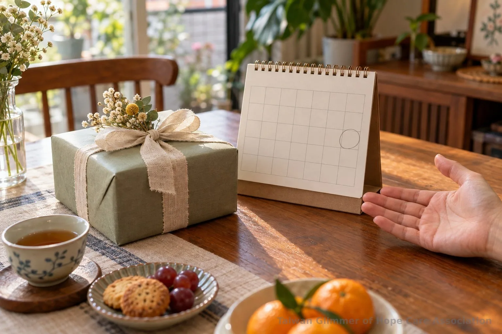
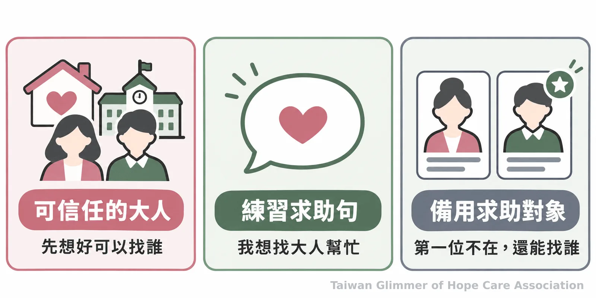
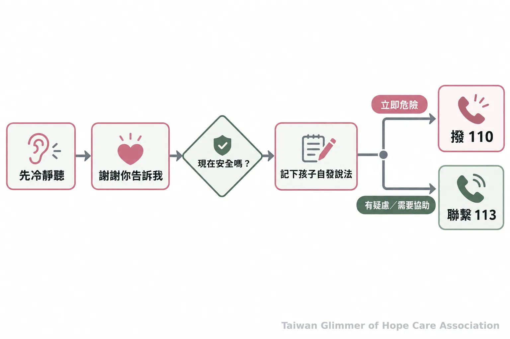

孩子說有人叫他保密，家長和老師可以怎麼回應？
生日驚喜可以等到約定時間再公開；讓孩子不舒服或被阻止求助的事，則可以告訴可信任的大人。認識日常對話、孩子揭露時的回應與113、110求助方式。
微光專欄｜身體界線｜系列二之 2
台灣微光希望關懷協會
生日禮物等到週末才能打開，是有約定揭曉時間的驚喜；若有人要求孩子把不舒服的碰觸或互動藏起來，孩子也可以告訴大人。好秘密和壞秘密是溝通方式，不是判斷真假的測驗。
一、秘密可以約定公開，求助不必等
生日驚喜通常有稍後公開的時刻；讓孩子不安，或要求他不能向任何人求助的事，可以說給可信任的大人聽。
大人可以問：「這件事什麼時候公開？」「你聽到這個要求，感覺如何？」若牽涉身體隱私、碰觸、照片，或有人以禮物、威脅要求保密，就提醒孩子可以離開、找大人幫忙。這些線索不能單獨用來判定是否發生侵害。
對方是熟人或長輩、曾送過禮物，或孩子當時沒有拒絕，都不會取消孩子求助的權利。可以把話說得簡單：「不管是誰，只要你覺得不舒服，或有人不讓你求助，都可以來告訴我。」

二、平常讓孩子知道，開口不會被責備
在平靜的日常反覆告訴孩子：即使犯錯、害怕或一時說不清楚，也可以求助。一起列出幾位可信任的大人，並想好第一個人不在時還能找誰。
家長和老師可以練習說：「身體是你的，不舒服可以離開，來找我。」「就算答應過保密，心裡不安也能改變主意。」「我會先聽你說。」兒童及少年未必能立刻拒絕或完整表達，保護責任仍在成人與相關制度。
土耳其一項教師帶領的學前兒童預防課程研究，追蹤結果顯示，參與課程兒童的知識與自我保護技能在兩個月後仍維持提升。這是特定課程、族群與追蹤結果，不能推論為台灣情境的成效，也不能保證單一教法能避免侵害。本文依官方保護指引整理求助方式，不以單一研究推論預防成效。

三、孩子開始說時，先聽並確認安全
先停下手邊的事，安靜聽孩子說，謝謝他願意告訴你，並確認他此刻是否安全。不責備、不質疑，也不自行盤問、誘導或要求孩子重複敘述。
可以回應：「謝謝你告訴我。」「我會陪你找人幫忙。」讓孩子按自己的速度表達，不急著補上空白，也避免問「你為什麼不早點說？」或「你確定嗎？」把孩子自發說出的內容與時間簡要記下，不自行調查或找對方對質，後續評估交由主管機關及受訓專業人員。
台灣微光希望關懷協會理事長林秀霞說：「孩子是需要被鼓勵、被肯定的。」孩子的情緒、沉默或敘述方式不能用來證明或否定事件；成人提供支持並尋求適當協助。

四、微光以藝術課陪伴孩子認識情緒
微光在合作據點每月安排一堂藝術陪伴課，從藝術作品帶出情緒主題，不設標準答案，也不比較畫得好不好。課堂活動是陪伴與表達，不用來判定孩子是否受害。
課程曾以「心情的顏色」畫秘密花園，也跟著夏卡爾畫「夢想花園」，把壓力想像成烏雲、怪獸或旋風。孩子可替作品命名、分享想法。桃園據點的課程紀錄見〈桃園第一個據點開課：中壢宣愛「心情的顏色」〉；瑞芳課程紀錄見〈瑞芳愛鄰據點：跟著夏卡爾，飛進我的夢想花園〉。
- 驚喜可以約定稍後公開；讓孩子不安或阻止求助的事，可以告訴可信任的大人。
- 孩子開口時先傾聽、確認安全，不自行盤問；有疑慮可撥113，立即危險撥110。
五、常見問題：好秘密和壞秘密怎麼教？
讓孩子知道可以再說；有疑慮時，大人可先諮詢專業單位。熟悉的關係不會取消求助權利，片段敘述也不能由成人自行判定真偽。
常見問題
Q1：生日驚喜也要保密，怎麼說明差別？
驚喜有約定的揭曉時間；孩子不安或被阻止求助，就可以告訴大人。這不是風險測驗。
Q2：孩子當時沒有說「不」，是不是代表同意？
不能這樣推論。孩子可能因害怕或權力差距而沒拒絕，成人應先確認安全，不責怪孩子。
Q3：孩子只說一點點，可以追問完整經過嗎？
先聽孩子自發表達，不盤問或要求重複陳述；記下原話並向113或專業人員詢問。
Q4：如果對方是孩子熟悉的人，也能求助嗎？
可以。熟識、收過禮物或答應保密，都不影響孩子求助。
Q5：家長或老師不確定怎麼處理，可以找誰？
可撥113保護專線諮詢或通報；衛生福利部說明，113全年無休，受理兒少保護與性侵害等事件通報及求助諮詢。若有立即人身安全危險，先撥110。教育人員執行職務時知悉疑似性侵害犯罪，依《性侵害犯罪防治法》第11條應立即通報，最遲不得超過24小時；疑似事件的評估與調查交由主管機關及專業人員處理。
今天可以找個平靜時刻告訴孩子：「如果有人要你保守讓你不舒服的秘密，你可以告訴我，我會先聽你說。」
微光專欄｜身體界線｜系列二之 2
求助資訊
- 113保護專線：兒少保護、性侵害等通報與求助諮詢，全年無休。
- 有立即人身安全危險：撥110。
參考文獻
- Kızıltepe R, et al. (2022). "I am Learning to Protect Myself with Mika:" A Teacher-based Child Sexual Abuse Prevention Program in Turkey. Journal of Interpersonal Violence, 37(11–12), NP10220–NP10244. https://pubmed.ncbi.nlm.nih.gov/33446045/
- 衛生福利部保護服務司。113保護專線介紹。https://dep.mohw.gov.tw/DOPs/cp-1183-6499-105.html
- 衛生福利部社會安全網。發生性侵害事件時，該怎麼處理和求助？https://mohw.gov.tw/SS/cp-4530-63643-204.html
- 全國法規資料庫。《性侵害犯罪防治法》第11條。https://law.moj.gov.tw/LawClass/LawAll.aspx?pcode=D0080079
本文同步刊於 appi.news。